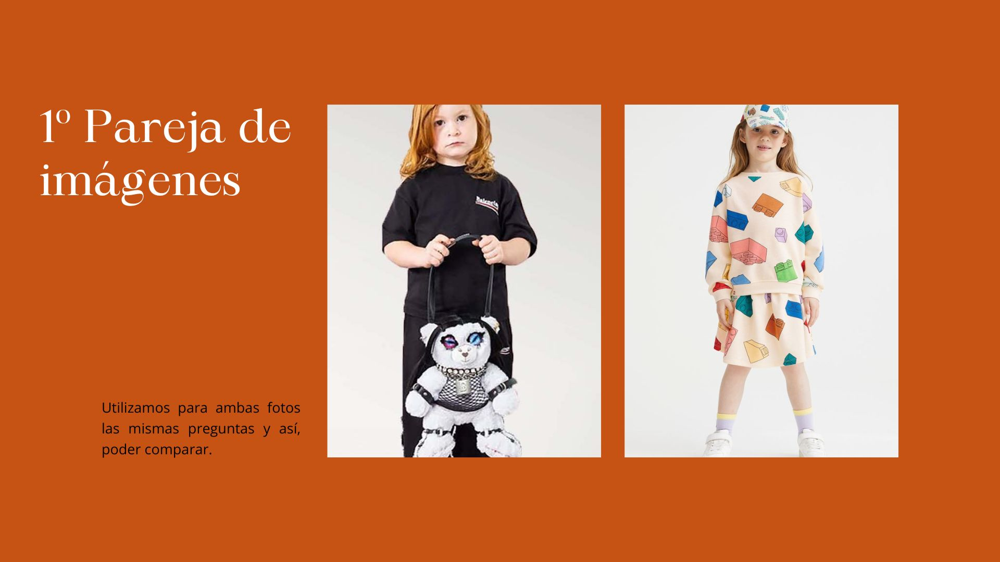
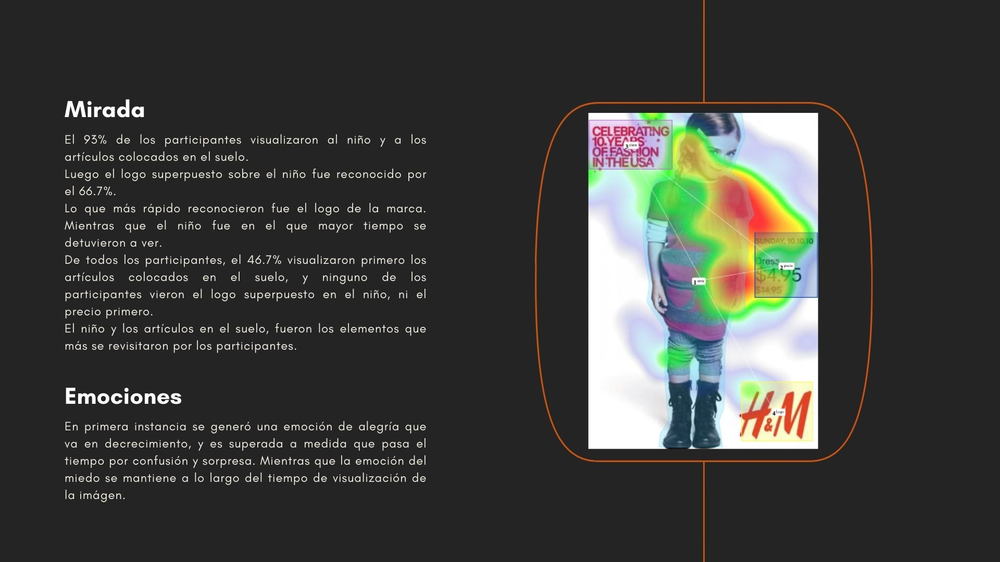
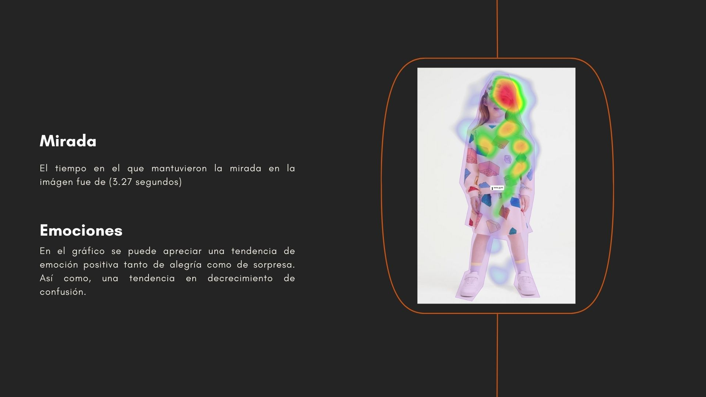
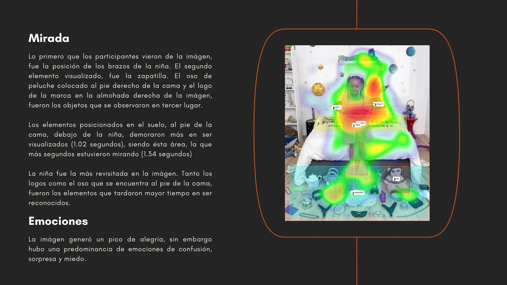
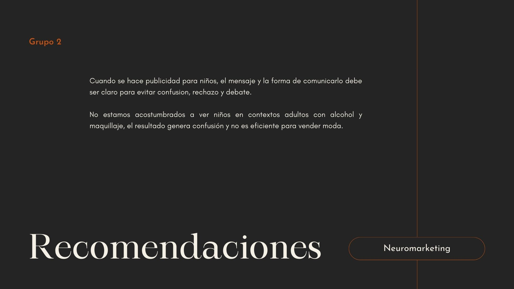
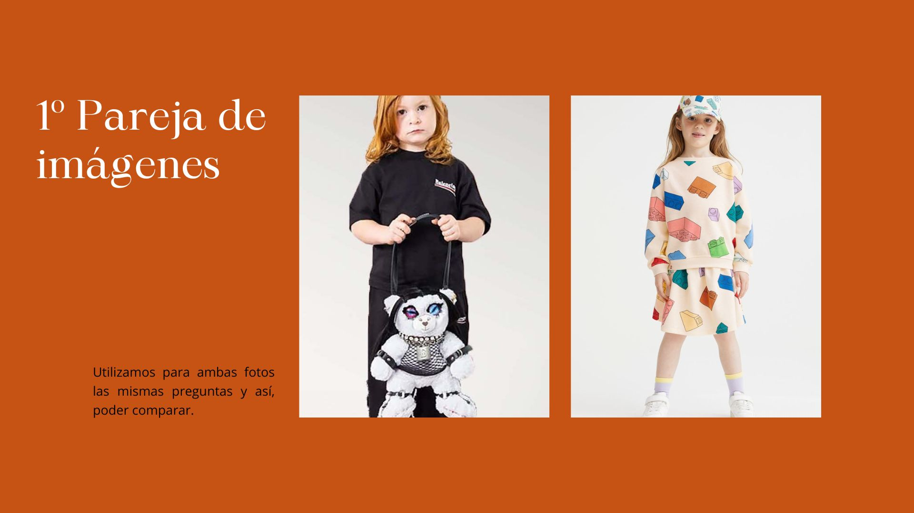
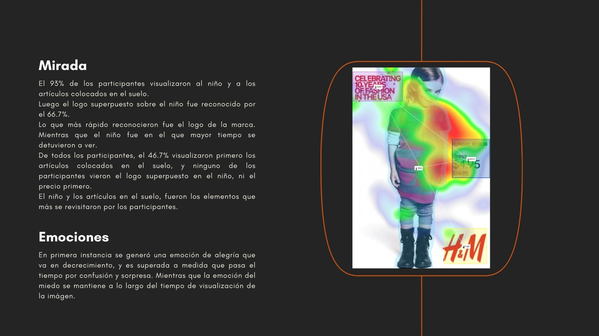
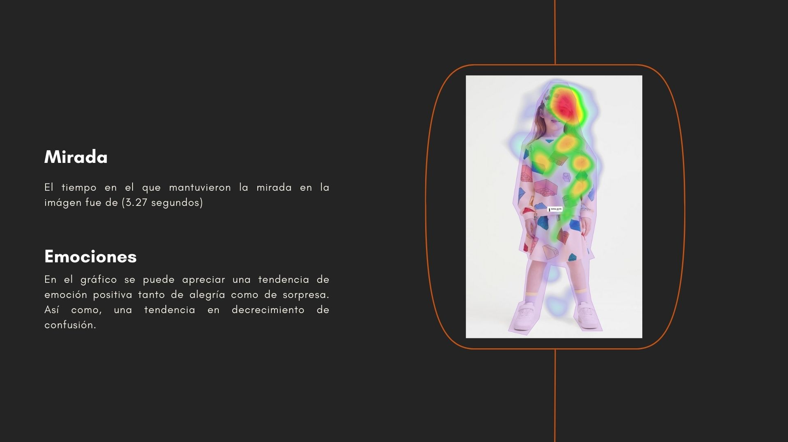
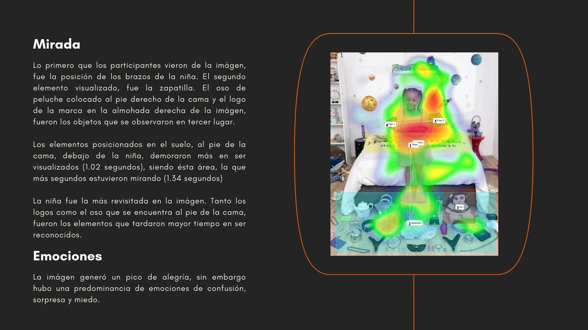
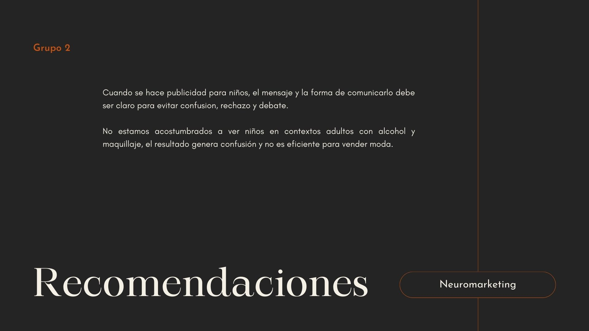

Análisis de una Estrategia Fallida
Análisis profundo de la campaña Primavera/Verano 2023 de Balenciaga. El estudio examina cómo el uso de elementos disruptivos y fuera de contexto generó un rechazo instintivo en el consumidor, analizando la percepción visual y la respuesta emocional ante la controversia.
"El límite de la provocación"
A través del neuromarketing, identificamos cómo la marca rompió los esquemas mentales del consumidor, transformando una intención de "pensamiento crítico" en una crisis de reputación global y rechazo de marca.
 








